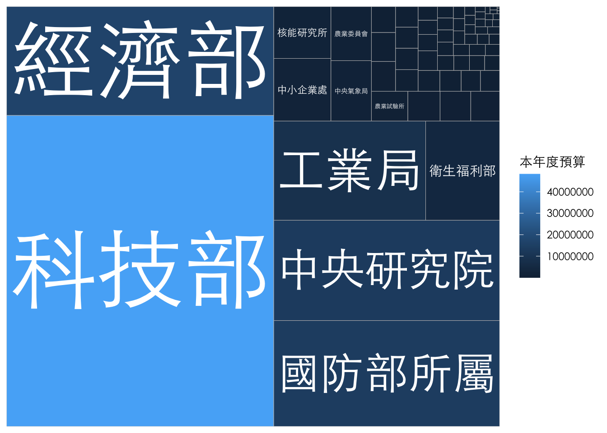
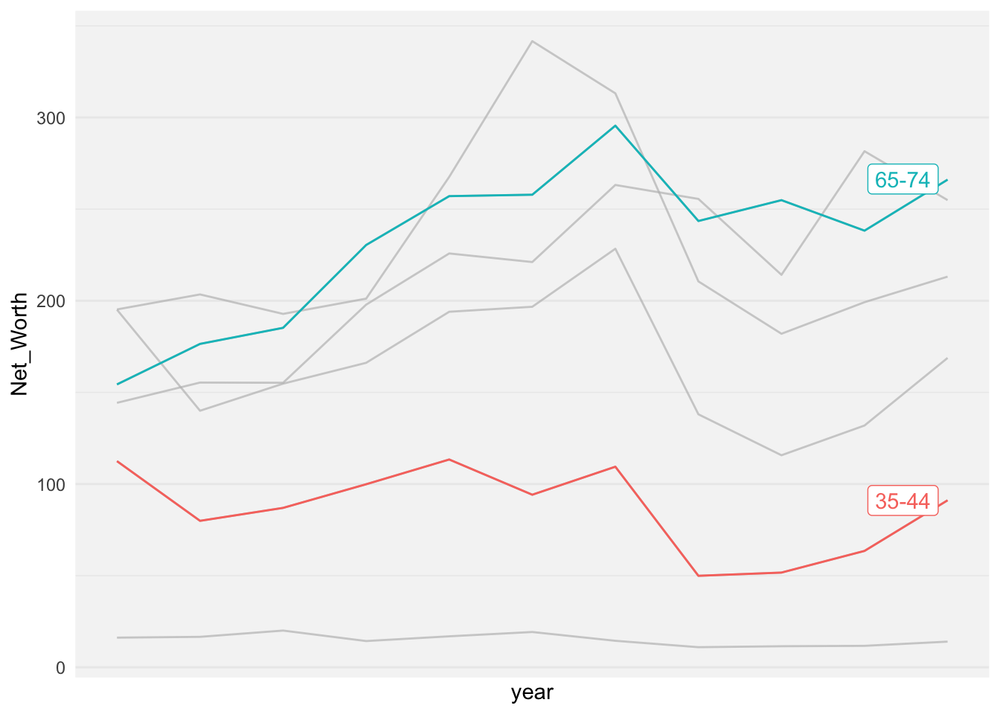

5.1 base to dplyr: TP Theft
library(tidyverse)
# options(stringsAsFactors = F) # default options in R ver.> 4.05.1.1 Reading data
# Read by read_csv()
# Will raise error
# Error in make.names(x) : invalid multibyte string at '<bd>s<b8><b9>'
# df <- read_csv("data/tp_theft.csv")
# read_csv() with locale = locale(encoding = "Big5")
library(readr)
df <- read_csv("data/臺北市住宅竊盜點位資訊-UTF8-BOM-1.csv")5.1.2 Cleaning data I
- Renaming variables by
select() - Generating variable year
- Generating variable month
- Retrieving area
selected_df <- df %>%
select(id = 編號,
cat = 案類,
date = `發生日期`,
time = `發生時段`,
location = `發生地點`) %>%
mutate(year = date %/% 10000) %>%
mutate(month = date %/% 100 %% 100) %>%
mutate(area = stringr::str_sub(location, 4, 6)) %>%
mutate(county = stringr::str_sub(location, 1, 3))5.1.3 Cleaning data II
- Filtering out irrelevant data records
# readr::guess_encoding("data/tp_theft.csv")
filtered_df <- selected_df %>%
# count(year) %>% View
filter(county == "臺北市") %>%
filter(year >= 104) %>%
# count(time) %>% View
# count(location) %>%
filter(!area %in% c("中和市", "板橋市"))5.1.4 Long to wide form
count()two variablesspread()spread one variable as columns to wide form
# count() then spread()
df.wide <- filtered_df %>%
count(time, area) %>%
spread(area, n, fill=0) 5.1.5 Setting time as row.name for mosaicplot
row.names(df.wide) <- df.wide$time
df.wide$time <- NULL# Specify fonts for Chinese
# par(family=('STKaiti'))
par(family=('Heiti TC Light')) # for mac
# Specify colors
colors <- c('#D0104C', '#DB4D6D', '#E83015', '#F75C2F',
'#E79460', '#E98B2A', '#9B6E23', '#F7C242',
'#BEC23F', '#90B44B', '#66BAB7', '#1E88A8')
# mosaicplot()
mosaicplot(df.wide, color=colors, border=0, off = 3,
main="Theft rate of Taipei city (region by hour)")
5.1.6 Clean version
library(readr)
# options(stringsAsFactors = F)
df <- read_csv("data/臺北市住宅竊盜點位資訊-UTF8-BOM-1.csv")
selected_df <- df %>%
select(id = 編號,
cat = 案類,
date = `發生日期`,
time = `發生時段`,
location = `發生地點`) %>%
mutate(year = date %/% 10000) %>%
mutate(month = date %/% 100 %% 100) %>%
mutate(area = stringr::str_sub(location, 4, 6)) %>%
mutate(county = stringr::str_sub(location, 1, 3))
selected_df %>% count(year)| year | n |
|---|---|
| 103 | 1 |
| 104 | 687 |
| 105 | 663 |
| 106 | 560 |
| 107 | 501 |
| 108 | 411 |
| 109 | 304 |
| 110 | 189 |
| 111 | 31 |
selected_df %>% count(time) %>% head(10)| time | n |
|---|---|
| 00~02 | 272 |
| 02~04 | 214 |
| 03~05 | 8 |
| 04~06 | 156 |
| 05~07 | 23 |
| 06~08 | 191 |
| 08~10 | 305 |
| 09~11 | 6 |
| 10~12 | 338 |
| 11~03 | 1 |
selected_df %>% arrange(time) %>% head(10)| id | cat | date | time | location | year | month | area | county |
|---|---|---|---|---|---|---|---|---|
| 2 | 住宅竊盜 | 1040101 | 00~02 | 臺北市文山區萬美里萬寧街1~30號 | 104 | 1 | 文山區 | 臺北市 |
| 3 | 住宅竊盜 | 1040101 | 00~02 | 臺北市信義區富台里忠孝東路5段295巷6弄1~30號 | 104 | 1 | 信義區 | 臺北市 |
| 6 | 住宅竊盜 | 1040102 | 00~02 | 臺北市士林區天福里1鄰忠誠路2段130巷1~30號 | 104 | 1 | 士林區 | 臺北市 |
| 12 | 住宅竊盜 | 1040105 | 00~02 | 臺北市中山區南京東路3段181~210號 | 104 | 1 | 中山區 | 臺北市 |
| 33 | 住宅竊盜 | 1040115 | 00~02 | 臺北市松山區饒河街181~210號 | 104 | 1 | 松山區 | 臺北市 |
| 74 | 住宅竊盜 | 1040131 | 00~02 | 臺北市南港區重陽路57巷1~30號 | 104 | 1 | 南港區 | 臺北市 |
| 75 | 住宅竊盜 | 1040201 | 00~02 | 臺北市北投區中心里中和街31~60號 | 104 | 2 | 北投區 | 臺北市 |
| 92 | 住宅竊盜 | 1040210 | 00~02 | 臺北市北投區大同路200巷1~30號 | 104 | 2 | 北投區 | 臺北市 |
| 95 | 住宅竊盜 | 1040212 | 00~02 | 臺北市萬華區萬大路493巷48弄1~30號 | 104 | 2 | 萬華區 | 臺北市 |
| 106 | 住宅竊盜 | 1040216 | 00~02 | 臺北市信義區吳興街269巷1~30號 | 104 | 2 | 信義區 | 臺北市 |
filtered_df <- selected_df %>%
# count(year) %>% View
filter(year >= 104) %>%
filter(!time %in% c("03~05", "05~07", "09~11", "11~13", "15~17", "17~19", "18~21", "21~23", "23~01"))
# count(time) %>% View
# count(location) %>%
# filter(!area %in% c("中和市", "板橋市"))
df.wide <- filtered_df %>%
count(time, area) %>%
spread(area, n, fill=0) %>%
as.data.frame()
row.names(df.wide) <- df.wide$time
df.wide$time <- NULL
par(family=('Heiti TC Light')) # for mac
# Specify colors
colors <- c('#D0104C', '#DB4D6D', '#E83015', '#F75C2F',
'#E79460', '#E98B2A', '#9B6E23', '#F7C242',
'#BEC23F', '#90B44B', '#66BAB7', '#1E88A8')
# mosaicplot()
mosaicplot(df.wide, color=colors, border=0, off = 3,
main="Theft rate of Taipei city (region by hour)") 